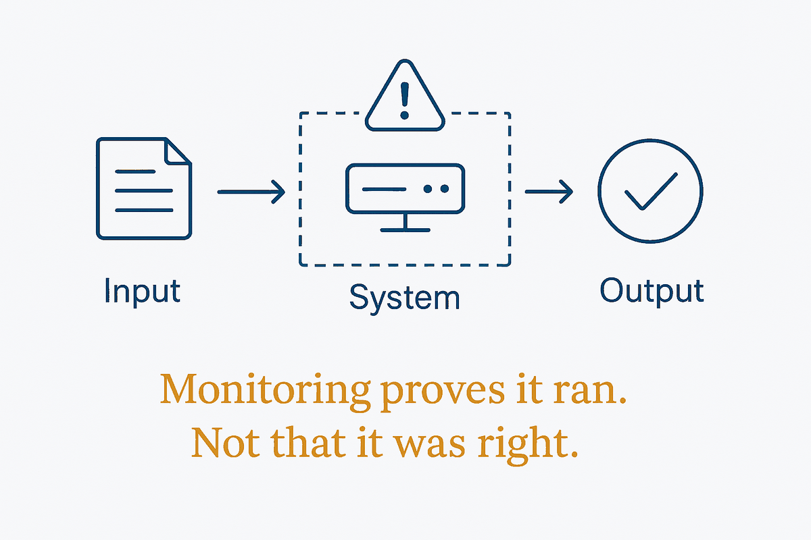

Monitoring proves the system ran. Observability for AI has to prove the answer was right — and those are different instruments.

Traditional monitoring answers questions with binary, mechanical answers: is it up, how fast, did it error. Every one of those can be green while the system produces confidently wrong output, because none of them looks at the content of what was produced. A pipeline that completes successfully and emits nonsense is, by conventional instrumentation, a healthy pipeline.
AI observability therefore has to measure a different class of thing: is the answer grounded in its sources, is it relevant to the question, is it drifting from what it produced last month, is it biased in some systematic direction, did it cost what it should have. These are properties of the output, not of the process, and they require a different apparatus — evaluation sets, groundedness scoring, drift detection, an audit trail per answer rather than per request.
The connection back to data is the part most teams miss. Output degradation usually starts upstream: a source went stale, a schema shifted, a definition changed, a feed stopped arriving. The model faithfully reasons over worse inputs and produces worse answers with unchanged fluency. So observability that stops at the model is watching the wrong end of the pipe — the feedback loop has to reach back to source quality, or you will keep diagnosing the symptom.
The uncomfortable implication is that "it ran" and "it worked" are two claims requiring two proofs, and most systems collect evidence for only the first. That is the same error as reading a status code as a statement about the world, scaled up: activity, faithfully logged, mistaken for outcome. An agent that reports success is reporting that it finished — nothing about whether it was right.